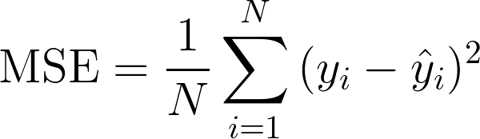

Essence of Mean Squared Error
What you need to know:
The smaller the means squared error, the closer you are to finding the line of best fit.
Depending on your data, it may be impossible to get a very small value for the mean squared error.
Advantage:
It is useful if we have unexpected values that we should care about. Abnormally high or low values should be paid attention to.
Disadvantage:
If we make a single very bad prediction, the squaring will make the error even worse and it may skew the metric towards overestimating the model’s badness. That is a particularly problematic behavior if we have noisy data or data that is unreliable. Even a “perfect” model may have a high MSE in that situation, it becomes hard to judge how well the model is performing. However, if all the errors are small (smaller than 1) the opposite effect is felt: we may underestimate the model’s badness.
Note that if we want to have a constant prediction the best one will be the mean value of the target values. It can be found by setting the derivative of our total error with respect to that constant to zero, and find it from this equation.
Definition(s):
In regression analysis, “mean squared error”, often referred to as mean squared prediction error or “out-of-sample mean squared error”, can refer to the mean value of the squared deviations of the predictions from the true values.
Understanding it visually:
See those tiny blue vertical lines that connect the circles (points) to the estimated line (the straight blue line pointing at an upward angle)? MSE basically measures average squared error of our predictions. For each point, it calculates square difference between the predictions and the target and then averages those values.
